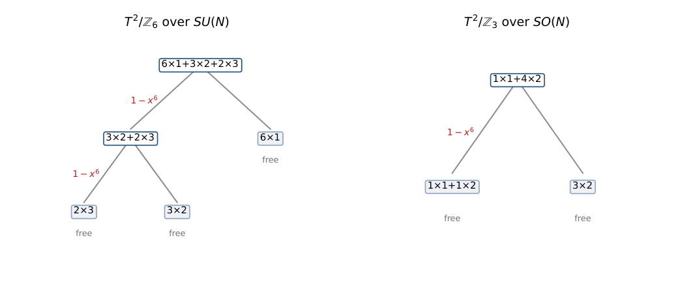
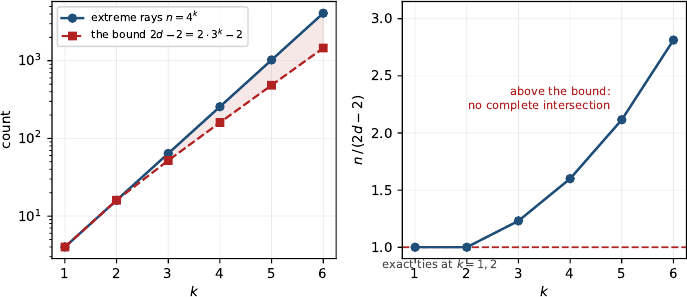

An Affine Semigroup from Orbifold Boundary Conditions: cut, phylogenetic and hierarchical models in the unit-weight sector, and weighted configurations beyond them (Part IX-B)
At a glance
What the paper contributes
The equivalence classes of orbifold boundary conditions are the elements of an affine semigroup: one generator per label of the alphabet of Part IX-A, graded by weight, embedded by its local data at the fixed points. The note identifies that semigroup and decides which of its cases are complete intersections.
- The dictionary (unit-weight sector), as an equality of point configurations: the cut configurations of P3, C4 and the wheel W4 (Sturmfels–Sullivant); group-based models on claw trees; a mixed-order variant not located in the literature; binary hierarchical models of cross-polytope boundaries.
- Thirteen complete intersections with explicit gluing trees (unitary, orthogonal and symplectic alphabets); seven are weighted, outside every framework of the dictionary.
- The tripod, decided (Proposition 1): the group-based model on the tripod is a complete intersection exactly when |G| ≤ 3, for every finite abelian group.
- Every k ≥ 3 (Proposition 2): (S1/ℤ2)k is not a complete intersection, by the extreme-ray bound of Fischer–Morris–Shapiro (Theorem 1, cited), and not a cut ideal, by a count of edges.
- The exceptional case S1/ℤ2 × S1/ℤ2: not a complete intersection by an exhaustive sweep (Proposition 3); a unique minimal Markov basis of 8 + 8 indispensable binomials in two orbits under an automorphism group of order 128 (Proposition 4); Cohen–Macaulay type 9 (Proposition 5).
- Inherited, and said so in the Ledger: the gluing criterion and the extreme-ray bound, the cut-ring invariants of W4 (normality, degree 64, codimension 7), the group-based codimensions.
🚀 Start here: Proposition 1: the group-based tripod is a complete intersection exactly when |G| ≤ 3.
Main results:
- Proposition 1: the group-based tripod is a complete intersection exactly when |G| ≤ 3
- Proposition 2: (S¹/Z₂)ᵏ is not a complete intersection for any k ≥ 3
- Proposition 4: unique minimal Markov basis: 8 quadrics + 8 quartics, all indispensable, two orbits under a group of order 128
- Proposition 5: Cohen–Macaulay type 9: canonical module generated in degrees 4 (one) and 6 (eight)
🗺️ Map of the results (click a box to go to it)
Dependencies in the written proof: an arrow A → B means that this proof of B uses A. Every result rests on its written proof; the tags record what was checked besides, and each statement's “Evidence & scope” block says how far. The colour of a box is its strongest tag, in the order above; the tags in the box give the rest. Boxes with a thick border are the main results; click a box to read the statement.
📐 Setting (copied from the paper, §1)
Let \(L=\{ \ell _1,\dots ,\ell _n\} \) be the alphabet, \(w_i\in \mathbb {Z}_{{\gt}0}\) the weight of \(\ell _i\) and \(v_i\in \mathbb {N}^{c}\) its local data. Put \(a_i=(w_i,v_i)\in \mathbb {N}^{1+c}\) and let \(S=\langle a_1,\dots ,a_n\rangle \subseteq \mathbb {N}^{1+c}\) be the affine semigroup they generate. The number of equivalence classes of rank \(N\) is the number of elements of \(S\) in degree \(N\), so the class-counting generating function is the Hilbert series \(H(S,x)\). The lattice of relations \(\mathcal L=\ker (\mathbb {Z}^n\to \mathbb {Z}^{1+c})\) has rank \(n-\dim S\), and its elements are the moves preserving every local datum. (§2) On \((S^1/\mathbb {Z}_2)^k\) the ground set is the \(2k\) reflections, in \(k\) antipodal pairs, and a fixed point is a choice of one reflection per circle. So the marginals are indexed by the \(2^k\) transversals, which are the facets of the boundary complex of the \(k\)-dimensional cross-polytope: \(n=2^{2k}=4^k\), \(\dim S=\# \{ \text{faces}\} =\sum _{j}\binom {k}{j}2^{\, j}=3^k\). (§4) For a partition \(T=T_1\sqcup T_2\) of the minimal generating set into non-empty parts, \(S\) is the gluing of \(S_1=\langle T_1\rangle \) and \(S_2=\langle T_2\rangle \) by \(\alpha \) if \(\alpha \in S_1\cap S_2\), \(\alpha \neq 0\), and \(G(S_1)\cap G(S_2)=\mathbb {Z}\alpha \). Fischer, Morris and Shapiro prove that an affine semigroup which is not free is a complete intersection if and only if it is a gluing of two complete intersections. (§5) The smallest member of the group-based family is the claw tree with three leaves. The labels are the triples of group elements summing to zero, so \(n=|G|^2\), and the local datum is the indicator of each entry.
What this blueprint shows.
The numbered statements of the paper, with their proofs, dependencies and what checked them, under the sections that hold them (with the paper’s numbers), and the figures and tables they use. The full text is in the PDF of the paper.
1 The semigroup
Let \(L=\{ \ell _1,\dots ,\ell _n\} \) be the alphabet, \(w_i\in {\mathbb {Z}}_{{\gt}0}\) the weight of \(\ell _i\) and \(v_i\in {\mathbb {N}}^{c}\) its local data. Put \(a_i=(w_i,v_i)\in {\mathbb {N}}^{1+c}\) and let \(S=\langle a_1,\dots ,a_n\rangle \subseteq {\mathbb {N}}^{1+c}\) be the affine semigroup they generate. The number of equivalence classes of rank \(N\) is the number of elements of \(S\) in degree \(N\), so the class-counting generating function is the Hilbert series \(H(S,x)\).
AddSubmonoid.closure · Mathlib/Algebra/Group/Submonoid/Basic.lean, line 112 (made by @[to_additive] from Submonoid.closure)
def closure (s : Set M) : Submonoid M
The Submonoid generated by a set.
IsAffineAddMonoid · Mathlib/Algebra/AffineMonoid/Basic.lean, line 20
class abbrev IsAffineAddMonoid (M : Type*) [AddCommMonoid M] : Prop
An affine monoid is a finitely generated cancellative torsion-free commutative monoid.
Mathlib commit f0b4c8150aa0, as this blueprint was built.
↳ Not used by another result of the paper.
|
orbifold |
group |
\(n\) |
\(\dim S\) |
rank \(\mathcal L\) |
\(H(S,x)\) |
|
\(S^1/{\mathbb {Z}}_2\) |
\(SU(N)\) |
\(4\) |
\(3\) |
\(1\) |
\((1-x^2)/(1-x)^4\) |
|
\(T^2/{\mathbb {Z}}_2\) |
\(SU(N)\) |
\(8\) |
\(5\) |
\(3\) |
\((1-x^2)^3/(1-x)^8\) |
|
\(T^2/{\mathbb {Z}}_3\) |
\(SU(N)\) |
\(9\) |
\(7\) |
\(2\) |
\((1-x^3)^2/(1-x)^9\) |
|
\(T^2/{\mathbb {Z}}_4\) |
\(SU(N)\) |
\(10\) |
\(8\) |
\(2\) |
\((1-x^4)^2/\big[(1-x)^8(1-x^2)^2\big]\) |
|
\(T^2/{\mathbb {Z}}_6\) |
\(SU(N)\) |
\(11\) |
\(9\) |
\(2\) |
\((1-x^6)^2/\big[(1-x)^6(1-x^2)^3(1-x^3)^2\big]\) |
|
\(T^2/{\mathbb {Z}}_4\) |
\(SU(N)\), weight \(1\) |
\(8\) |
\(7\) |
\(1\) |
\((1-x^4)/(1-x)^8\) |
|
\(T^2/{\mathbb {Z}}_6\) |
\(SU(N)\), weight \(1\) |
\(6\) |
\(6\) |
\(0\) |
\(1/(1-x)^6\) |
|
\(T^2/{\mathbb {Z}}_3\) |
\(SO(N)\) |
\(5\) |
\(4\) |
\(1\) |
\((1-x^6)/\big[(1-x)(1-x^2)^4\big]\) |
|
\(T^2/{\mathbb {Z}}_4\) |
\(SO(N)\) |
\(8\) |
\(6\) |
\(2\) |
\((1-x^4)^2/\big[(1-x)^4(1-x^2)^4\big]\) |
|
\(T^2/{\mathbb {Z}}_6\) |
\(SO(N)\) |
\(8\) |
\(6\) |
\(2\) |
\((1-x^6)^2/\big[(1-x)^2(1-x^2)^3(1-x^3)^2(1-x^4)\big]\) |
|
\(S^1/{\mathbb {Z}}_2\times S^1/{\mathbb {Z}}_2\) |
\(SU(N)\) |
\(16\) |
\(9\) |
\(7\) |
\(\dfrac {1+7x+20x^2+28x^3+7x^4+x^5}{(1-x)^9}\) |
Colour: blue shade = the number’s size within its column.
5 The tripod, decided
Let \(G\) be a finite abelian group and let \(S\) be the semigroup of the group-based model on the tripod. Then \(S\) is a complete intersection if and only if \(|G|\le 3\): it is free for \(|G|=2\), a complete intersection with two cubics for \(|G|=3\), and not a complete intersection for \({\mathbb {Z}}_4\), for \({\mathbb {Z}}_2\times {\mathbb {Z}}_2\), or for any abelian group of order at least \(5\).
🆕 Classical and new: the paper looked for this classification in the group-based literature and did not find it; what that literature settles for the tripod is normality, and the local (Zariski-open) complete intersection of [CFM] (§4, §6, Ledger).
↳ Not used by another result of the paper.
The labels are the triples of group elements summing to zero, so \(n=|G|^2\), and the local datum is the indicator of each entry, so \(\dim S=3(|G|-1)+1=3|G|-2\) and the codimension is \((|G|-1)(|G|-2)\), which is the value the phylogenetics literature prints for the tripod.
Every generator is an extreme ray, by the argument of Proposition 2: it is a \(0/1\) vector with one \(1\) in each of three blocks, hence one of the vertices of a product of three simplices, and a vertex stays extreme in the hull of any subset containing it. Nothing in that argument uses the group law beyond the fact that the labels select a subset of those vertices, so it holds unchanged for every finite abelian \(G\) and not only for the cyclic ones — which is what lets the bound below be quantified over all of them. Theorem 1 therefore requires
which holds for \(2\le |G|\le 4\) and fails from \(5\) on: writing \(f(g)=g^2-6g+6\), one has \(f(5)=1{\gt}0\) and \(f(g+1)-f(g)=2g-5{\gt}0\) for \(g\ge 3\), so \(f\) is positive and increasing on the integers \(g\ge 5\). The bound therefore settles every group of order five or more; the trivial group is outside its reach for the other reason, \(\dim S=1\) being below the \(d\ge 2\) of Theorem 1, and its semigroup is \({\mathbb {N}}\), free. That leaves four groups open, of three orders: \({\mathbb {Z}}_2\), \({\mathbb {Z}}_3\), \({\mathbb {Z}}_4\) and \({\mathbb {Z}}_2\times {\mathbb {Z}}_2\). Each of the four is decided by the gluing criterion, exhaustively — the two of order \(4\) over all \(2^{15}-1\) partitions of their sixteen generators — with the results of Table 3.
🛡️ Evidence & scope
Program: Z₂, Z₃, Z₄, Z₂×Z₂ by the gluing criterion (the order-4 groups over all 2¹⁵−1 partitions), with the codimension control (|G|−1)(|G|−2). scripts/tripod_gate.py, outputs/tripod_gate.txt
By hand: every order ≥ 5 by the extreme-ray bound |G|² ≤ 6|G|−6 of Theorem 1. proof of Proposition 1
|
\(G\) |
\(n=|G|^2\) |
\(\dim S\) |
codim |
\(2\dim S-2\) |
verdict |
|
\({\mathbb {Z}}_2\) |
\(4\) |
\(4\) |
\(0\) |
\(6\) |
free |
|
\({\mathbb {Z}}_3\) |
\(9\) |
\(7\) |
\(2\) |
\(12\) |
complete intersection, degrees \([3,3]\) |
|
\({\mathbb {Z}}_4\) |
\(16\) |
\(10\) |
\(6\) |
\(18\) |
not a complete intersection (swept) |
|
\({\mathbb {Z}}_2\times {\mathbb {Z}}_2\) |
\(16\) |
\(10\) |
\(6\) |
\(18\) |
not a complete intersection (swept) |
|
\(|G|\ge 5\) |
\(|G|^2\) |
\(3|G|-2\) |
— |
\(6|G|-6\) |
not a complete intersection ((4)) |
Colour: green = yes / holds; red = no / fails; grey = nothing; blue shade = the number’s size within its column.
8 Every \(k\ge 3\), in one line
Let \(S\) be a \(d\)-dimensional affine semigroup which is a complete intersection, with \(d\ge 2\). Then the cone of \(S\) has at most \(2d-2\) extreme rays.
🆕 Classical and new: cited, not claimed: Fischer, Morris and Shapiro [FMS, Cor. 3.4].
↳ Used in: Proposition 1, Proposition 2
For every \(k\ge 3\), the semigroup of \((S^1/{\mathbb {Z}}_2)^k\) is not a complete intersection.
added to the Lean repository after publication (20-oct-2026): the counts (4ᵏ distinct generators, ∑ C(k,j)2ʲ = 3ᵏ), the arithmetic 4ᵏ > 2·3ᵏ − 2 for k ≥ 3 and equation (5); the proposition itself with Theorem 1 (Fischer–Morris–Shapiro, not in Mathlib) as a hypothesis; that every generator spans an extreme ray; and that the generators span a space of dimension 3ᵏ for every k (the generator matrix is the k-th Kronecker power of a 4 × 4 matrix of rank 3, through a general rank(A ⊗ B) = rank A · rank B that we proved, since no library had it, in LinearAlgebra/Matrix/Rank/Kronecker.lean). Not in Lean: Theorem 1 itself (Fischer–Morris–Shapiro), which enters only as a hypothesis
OrbifoldProduct.not_completeIntersection_of_fmsOrbifoldProduct.fms_bound_violatedOrbifoldProduct.fms_bound_metOrbifoldProduct.card_labelsOrbifoldProduct.marginal_injectiveOrbifoldProduct.sum_choose_mul_two_powOrbifoldProduct.edges_exceedOrbifoldProduct.cut_verticesOrbifoldProduct.generator_extremeOrbifoldProduct.not_cone_of_othersOrbifoldProduct.rank_generatorsOrbifoldProduct.generators_eqOrbifoldProduct.rank_circle
add_pow · Mathlib/Data/Nat/Choose/Sum.lean, line 76
theorem add_pow [CommSemiring R] (x y : R) (n : ℕ) :
(x + y) ^ n = ∑ m ∈ range (n + 1), x ^ m * y ^ (n - m) * n.choose mThe binomial theorem
Mathlib commit f0b4c8150aa0, as this blueprint was built.
✅ Checked when this page was built: OrbifoldProduct.lean compiles with Lean 4.35.0, no errors, no sorry. Axioms — not_completeIntersection_of_fms, fms_bound_violated, card_labels, sum_choose_mul_two_pow, edges_exceed, cut_vertices, generator_extreme, not_cone_of_others, rank_generators, generators_eq, rank_circle: propext, Classical.choice, Quot.sound; fms_bound_met: propext; marginal_injective: propext, Quot.sound.
Reproduce: Lean 4.35.0, Mathlib f0b4c8150aa0; in that Lean project, lake env lean OrbifoldProduct.lean (SHA-256 of the compiled file: c5e02635c60ff814…; a source page on this site may show it with comments edited, under its own hash).
🆕 Classical and new: claimed as the paper’s own (Ledger), together with the edge count showing it is not a cut ideal for k ≥ 3; the bound it uses is Fischer–Morris–Shapiro [FMS, Cor. 3.4] (Theorem 1 of the paper, cited).
↳ Used in: Proposition 1
Every generator is an extreme ray. A generator is a \(0/1\) vector with exactly one \(1\) in each of the \(2^k\) fixed-point blocks, so the generators are a subset of the vertex set of the product of the fixed-point simplices — a proper subset, since the product orbifold correlates the data at different fixed points and only \(4^k\) of those vertices occur. That is enough: a vertex of a polytope remains extreme in the convex hull of any subset of the vertices containing it, and all the generators lie in one weight hyperplane, so each of them spans an extreme ray of the cone. With \(n=4^k\) and \(d=3^k\) from (2), Theorem 1 requires \(4^k\le 2\cdot 3^k-2\), and \((4/3)^3{\gt}2\).
🛡️ Evidence & scope
Program: n = 4ᵏ, d = 3ᵏ, every generator extreme (integer Farkas certificates), k = 1..5; control: FMS Example 3.5 rebuilt for r = 1..4 attains 2d − 2 exactly, and two decoys. scripts/fms_cone_gate.py, outputs/fms_cone_gate.txt
🧪 Lab: extreme rays against the bound, for your own k
Builds the semigroup of \((S^1/\mathbb {Z}_2)^k\) from the labels and the fixed-point readouts (one indicator block per fixed point), counts its generators \(n\) (all extreme rays) and computes \(d=\dim S\) as the exact rank of the generator matrix; then compares \(n\) with the bound \(2d-2\) of Theorem 1. Built for \(k\le 4\); beyond, only the formula values \(4^k\), \(3^k\) are shown, and the lab says so.
🖼️ Figure 2

Proposition 2, drawn: the extreme rays against the bound, and their ratio. The ratio is exactly \(1\) at \(k=1,2\) — the bound is met, not approached — and exceeds \(1\) from \(k=3\). The ties are why \(k=2\) needed the exhaustive sweep, and why no inequality of this shape can separate a complete intersection from something meeting its bound exactly.
9 The exception, exhaustively
The semigroup of \(S^1/{\mathbb {Z}}_2\times S^1/{\mathbb {Z}}_2\) is not a complete intersection.
🆕 Classical and new: a direct argument independent of [SScuts, Table 1], which already records the cut ring of W₄ (8 + 8 minimal generators, codimension 7, degree 64) (§3, §8).
↳ Not used by another result of the paper.
It is not free: its relation lattice has rank \(7\). By [ 8 ] it is then a complete intersection if and only if some partition of its minimal generating set into two non-empty parts is a gluing. There are \(2^{15}-1=32767\) such partitions; testing each exactly, \(16\) survive the rank condition on the lattice intersection and none of those has an admissible \(\alpha \).
🛡️ Evidence & scope
Program: all 32767 partitions of the 16 labels: 16 survive the rank condition, none has an admissible gluing element. scripts/gluing_tree.py, outputs/gluing_tree.txt
Program: minimal Markov basis 8 + 8 against a relation lattice of rank 7. scripts/complete_intersection.py, outputs/complete_intersection.txt
Literature: the same invariants in Sturmfels–Sullivant, Table 1 (row of the suspension of C₄). [SScuts]
On \(S^1/{\mathbb {Z}}_2\times S^1/{\mathbb {Z}}_2\) at rank \(4\), exactly eight fibres of the local-datum map are not connected by the degree-\(2\) relations. Each of those fibres contains exactly two boundary conditions, and they are the only fibres of rank \(4\) with more than one component. The corresponding eight quartic binomials are therefore indispensable: each occurs, up to sign, in every Markov basis of the ideal. So are the eight quadrics, for the same reason at rank \(2\); hence
Under \(\mathcal G\) the sixteen fall into exactly two orbits, one per degree.
🆕 Classical and new: claimed as the paper’s own (Ledger): uniqueness up to signs and the two orbits under Aut(A); the 8 + 8 count itself is in [SScuts, Table 1].
↳ Not used by another result of the paper.
🛡️ Evidence & scope
Program: the eight split fibres at rank 4 and the eight degree-4 generators are the same eight. scripts/quartic_orbit_gate.py, outputs/quartic_orbit_gate.txt
Program: all sixteen indispensable; Aut(A) computed directly has order 128 and equals the group of seven involutions; orbits 8 + 8 (and the 8 canonical generators one orbit). scripts/indispensable_gate.py, outputs/indispensable_gate.txt
The semigroup ring of \(S^1/{\mathbb {Z}}_2\times S^1/{\mathbb {Z}}_2\) has Cohen–Macaulay type \(9\). Its canonical module has one minimal generator in degree \(4=\operatorname {codeg}P\) and eight in degree \(6\), and none in any other degree.
🆕 Classical and new: claimed as the paper’s own: the type 9 and the degrees of the canonical generators; normality, Cohen–Macaulayness and non-Gorensteinness are [SScuts, Table 1] (Ledger).
↳ Not used by another result of the paper.
🛡️ Evidence & scope
Program: interior points 1, 16, 136, 752, 3097 in degrees 4–8 by enumeration and by (−1)ᵈH(1/x); minimal generators 1, 0, 8, 0, 0; Gorenstein decoy S¹/Z₂ returns type 1. scripts/gorenstein_gate.py, outputs/gorenstein_gate.txt
Program: h*-vector (1,7,20,28,7,1) and the degree-2-moves series (1,7,20,28,15,−7). scripts/formula_atlas.py, outputs/formula_atlas.txt
🖼️ Figure 3

The two counts of \(S^1/{\mathbb {Z}}_2\times S^1/{\mathbb {Z}}_2\) written over \((1-x)^9\). The first four coefficients agree; the last is negative on the right, and a lattice polytope cannot produce a negative \(h^*_i\). The two series are \(1,16,128,688,\mathbf{2809}\) and \(1,16,128,688,\mathbf{2817}\).
|
invariant |
value |
source |
|
vertices, dimension, facets |
\(16\), \(8\), \(24\) |
computed here |
|
\(f\)-vector |
\((1,16,104,360,712,816,520,168,24,1)\) |
computed here |
|
\(h^*\)-vector |
\((1,7,20,28,7,1)\) |
computed here |
|
normalised volume |
\(64\) |
\(\sum h^*_i\); also the degree in [ 2 ] |
|
minimal generators |
\(8\) quadrics, \(8\) quartics |
computed here; [ 2 ] , Table 1 |
|
normal, Cohen–Macaulay |
yes, yes |
[ 2 ] , Table 1 |
|
Gorenstein |
no — Cohen–Macaulay type \(9\) |
computed here |
|
\(\operatorname {codeg}P\), \(a(k[S])\), \(\operatorname {reg}k[S]\) |
\(4\), \(-4\), \(5\) |
computed here |
|
complete intersection |
no |
Proposition 3 |
Colour: green = yes / holds; red = no / fails.
References
- 1
C. Marín, The Alphabet of Orbifold Boundary Conditions, Part IX-A of this series, Zenodo, doi:10.5281/zenodo.22254861.
- 2
B. Sturmfels, S. Sullivant, Toric geometry of cuts and splits, Michigan Math. J. 57 (2008) 689–709, arXiv:math/0606683.
- 3
A. Engström, Cut ideals of \(K_4\)-minor free graphs are generated by quadrics, Michigan Math. J. 60 (2011) 705–714, arXiv:0805.1762.
- 4
B. Sturmfels, S. Sullivant, Toric ideals of phylogenetic invariants, J. Comput. Biol. 12 (2005) 204–228, arXiv:q-bio/0402015.
- 5
M. Casanellas, J. Fernández-Sánchez, M. Michałek, Local description of phylogenetic group-based models, arXiv:1402.6945.
- 6
M. Michałek, E. Ventura, Finite phylogenetic complexity of \({\mathbb {Z}}_p\) and invariants for \({\mathbb {Z}}_3\), J. Algebra (2017), arXiv:1508.04177.
- 7
M. Michałek, E. Ventura, Phylogenetic complexity of the Kimura 3-parameter model, arXiv:1704.02584.
- 8
K. G. Fischer, W. Morris, J. Shapiro, Affine semigroup rings that are complete intersections, Proc. Amer. Math. Soc. 125 (1997) 3137–3145. 🔎 find it
- 9
C. Delorme, Sous-monoı̎des d’intersection complète de \(N\), Ann. Sci. Éc. Norm. Supér. 9 (1976) 145–154. 🔎 find it
- 10
A. Assi, P. A. García-Sánchez, I. Ojeda, Frobenius vectors, Hilbert series and gluings of affine semigroups, J. Commut. Algebra 7 (2015) 317–335. 🔎 find it
- 11
R. P. Stanley, Decompositions of rational convex polytopes, Ann. Discrete Math. 6 (1980) 333–342. 🔎 find it
- 12
N. Haba, Y. Hosotani, Y. Kawamura, Prog. Theor. Phys. 111 (2004) 265. 🔎 find it
- 13
Y. Kawamura, T. Miura, Prog. Theor. Phys. 122 (2009) 847, arXiv:0905.4123.
- 14
K. Takeuchi, T. Inagaki, Classification of \(T^2/{\mathbb {Z}}_m\) orbifold boundary conditions, arXiv:2404.19411.
- 15
K. Takeuchi, T. Inagaki, PTEP 2025 043B03, arXiv:2501.05849.